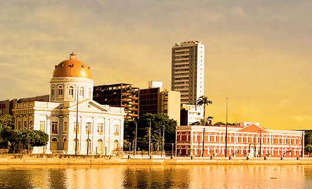

Rua da Aurora
A Rua da Aurora, A rua da Aurora é um logradouro da cidade brasileira do Recife, capital de Pernambuco. Está situada na margem esquerda do rio Capibaribe e, no seu trecho final, na margem direita do rio Beberibe.
Tem início na Ponte da Boa Vista, terminando na Ponte de Limoeiro, no local onde se inicia a Avenida Norte em Santo Amaro.
Tem este nome porque todas as suas casas são voltadas para o leste, o nascente